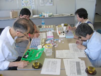

【日 時】
６月15日（金） 10:30～13:00
【場 所】
埼玉県生協連・会議室
【出席人数】
５人（さいたまコープ、生活クラブ、コーペル、埼玉県生協連）
 2007年第１回６月の二酸化窒素測定が、５月31日～６月１日に県内約5,000カ所で行われました。それにあわせて、11カ所ある県や市の測定局に各生協で分担してカプセルを設置し、その共同分析を行いました。今後、組合員が設置したカプセルの測定値を出し、データを集約して６月測定の結果やまとめを行います。